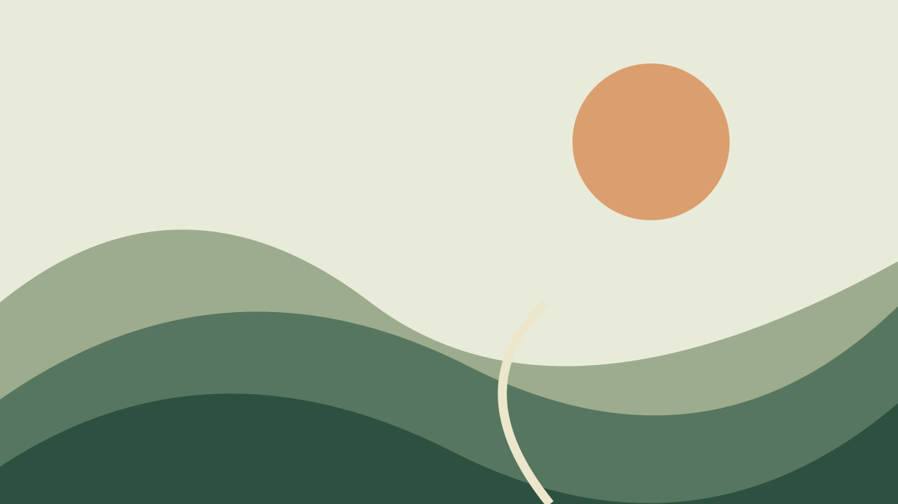

A Markdown-first social network for a passing observation, a considered essay, and everything in between.
A little less noise. A little more room for ideas to take their shape.

A place for your perspective.
Warm paper, quiet green, editorial serif. A welcoming place to write, read, and stay for the conversation.
A little less noise. A little more room for ideas to take their shape.
A place for your perspective.
Precise type and a clear cobalt signal. A sharper, more utilitarian interpretation of the same product.
A little less noise. A little more room for ideas to take their shape.
A place for your perspective.
Deep charcoal and warm apricot. An intimate, reflective direction for creators and considered reading.
Comfortable measure, clear hierarchy and enough room to read. Typography carries the identity.
Quiet reactions and thoughtful replies. Long articles and short posts share the same home.
One Markdown contract with native expression on Angular web, iOS, iPadOS and Android.